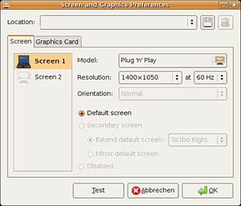

displayconfig-gtk
Archivierte Anleitung
Dieser Artikel wurde archiviert, da er - oder Teile daraus - nur noch unter einer älteren Ubuntu-Version nutzbar ist. Diese Anleitung wird vom Wiki-Team weder auf Richtigkeit überprüft noch anderweitig gepflegt. Zusätzlich wurde der Artikel für weitere Änderungen gesperrt.
Anmerkung: Paket nicht mehr verfügbar
Zum Verständnis dieses Artikels sind folgende Seiten hilfreich:
displayconfig-gtk ist ein kleines Programm für GTK-basierte Desktopsysteme (wie GNOME oder Xfce), mit dem mit Hilfe einer grafischen Benutzeroberfläche recht einfach der Grafikkartentreiber, der Monitor sowie - falls vorhanden - der zweite Monitorausgang konfiguriert werden kann. Das Programm basiert dabei auf Guidance.
Installation¶
Falls displayconfig-gtk bei der Installation nicht mit installiert wurde, so lässt es sich über folgendes Paket nachträglich installieren [1]:
displayconfig-gtk (von Feisty bis Hardy verfügbar - seit Intrepid nicht mehr )
 mit apturl
mit apturl
Paketliste zum Kopieren:
sudo apt-get install displayconfig-gtk
sudo aptitude install displayconfig-gtk
Benutzung¶
 Zum Starten von displayconfig-gtk ruft man das Programm mit Root-Rechten auf [2] Unter Hardy und Gutsy kann man displayconfig-gtk auch über
"System -> Bildschirme und Grafik".
bzw. bei Xubuntu (ab Hardy)
"Applications -> Andere -> Bildschirme und Grafik"
starten.
Anschließend erscheint die grafische Benutzeroberfläche von displayconfig-gtk. Hier gibt es die beiden Reiter "Bildschirm" und "Grafikkarte".
Unter "Bildschirm" kann man die Auflösung, die Wiederholfrequenz und den Treiber für den angeschlossenen Monitor bzw. die angeschlossenen Monitore, Beamer etc. einstellen. Verwendet man einen zweiten Monitor, so kann man zusätzlich einstellen, ob der Inhalt des ersten Monitors geklont wird oder ob der Bildschirmbereich des ersten Monitors nach oben, unter, rechts oder links erweitert werden soll.
Unter "Grafikkarte" kann man den Treiber für die Grafikkarte auswählen. Möchte man die aktuelle Einstellung ändern, so klickt man einfach auf den Eintrag mit dem aktuellem Treiber. Dann erhält man eine Liste der verfügbaren Treiber, die man entweder nach Treibernamen oder Name der Grafikkarte sortieren kann. Für manche Grafikkarten kann man zusätzlich noch einstellen, wie viel Video Memory diese benutzen dürfen.
Klickt man nach der Änderung von Einstellungen auf "Test", so werden die Änderung testweise übernommen, "Ok" speichert diese dauerhaft, wobei displayconfig-gtk die Datei xorg.conf (zu finden im Verzeichnis /etc/X11) neu erstellt. Die alte Datei wird unter dem Namen xorg.conf.1 (bzw. bei mehreren Änderungen auch ".2", ".3"...) gespeichert.
Hinweis:
Sollte der X-Server nach ein Klick auf "Test" abstürzen, bzw. der Bildschirm schwarz bleiben, so hilft ein einfacher Neustart des Rechners. Bei "Test" wird die bestehende Konfigurationsdatei xorg.conf noch nicht geändert. Deshalb sollte der Rechner nach dem Neustart auch wieder mit der "alten" Auflösung starten und einsatzfähig sein.
Alternative¶
Alternative Möglichkeiten die Grafikkarte und den Bildschirm mit Hilfe einer grafischen Benutzeroberfläche zu konfigurieren findet man in diesem Artikel.
Ab 8.10 Intrepid Ibex steht über den Menüpunkt "System -> Einstellungen -> Bildschirmauflösung" bzw. "Sytem -> Einstellungen -> Anzeige" (GNOME) eine weitere Konfigurationsmöglichkeit zur Verfügung.
- Erstellt mit Inyoka
-
 2004 – 2017 ubuntuusers.de • Einige Rechte vorbehalten
2004 – 2017 ubuntuusers.de • Einige Rechte vorbehalten
Lizenz • Kontakt • Datenschutz • Impressum • Serverstatus -
Serverhousing gespendet von